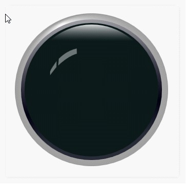
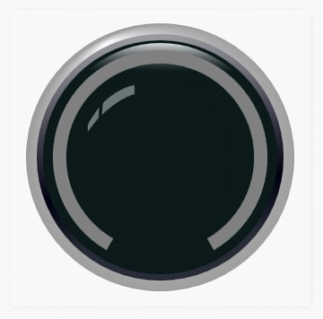
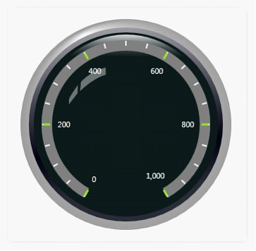
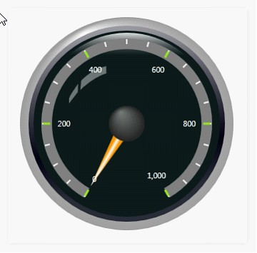
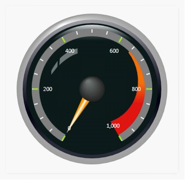
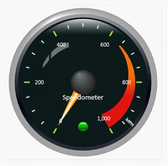

Circular Gauges is enhanced with circle frame type or semi-circle frame type. This section covers how to create a basic gauge and add element to it.
1. Create a basic circular gauge by using the following code.
|
[XAML]
<syncfusion:CircularGauge Name="circulargauge1"/> |
|
[C#]
CircularGauge circulargauge1 = new CircularGauge(); LayoutRoot.Children.Add(circulargauge1); |
When the code runs the following output displays.

Figure 10: Basic Gauge
2. Add Scale to the Circular Gauge, by using the following code.
|
[XAML]
<!--Scale for Gauge control--> <syncfusion:CircularScale Name="m_scale" BorderWidth="3" GapSweepAngle="300" MajorIntervalValue="200" Maximum="1000" Minimum="0" MinorIntervalValue="50" BackgroundBrush="Gray"BorderBrush="Transparent" Radius="120" ScaleBarSize="15" ShadowOffset="0" StartAngle="120"> </syncfusion:CircularScale> |
|
[C#]
// Creating Scale and adding to Gauge. CircularScale m_scale = new CircularScale(); m_scale.BorderWidth = 3; m_scale.GapSweepAngle = 300; m_scale.MajorIntervalValue = 200; m_scale.Maximum = 1000; m_scale.Minimum = 0; m_scale.MinorIntervalValue = 50; m_scale.StartAngle = 120; m_scale.BackgroundBrush = Brushes.Gray; m_scale.BorderBrush = Brushes.Transparent; m_scale.Radius = 120; m_scale.ScaleBarSize = 15; m_scale.ShadowOffset = 0; circulargauge1.Scales.Add(m_scale); |
When the code runs the following output displays.

Figure 11: Gauge with Scale
3. Add Ticks to Circular Scale, by using the following code.
|
[XAML]
<syncfusion:CircularScale.Ticks>
<!--Minor Tick for Circular Scale.--> <syncfusion:CircularMarkTick TickHeight="7" Name="minorTick" DistanceFromScale="3" TickStyle="MinorTick" TickShape="Rectangle" TickWidth="2"/>
<!--Major Tick for Circular Scale.--> <syncfusion:CircularMarkTick Name="majorTick" Angle="0" TickHeight="10" TickShape="Rectangle" TickStyle="MajorTick" TickWidth="3"/>
<!--Label Tick for Circular Scale.--> <syncfusion:CircularLabelTick Name="majorLabelTick" DistanceFromScale="8" FontSize="11" TickPlacement="Inside" TickStyle="MajorTick" />
</syncfusion:CircularScale.Ticks> |
|
[C#]
// Creating Minor Mark Tick and adding it to Scale. CircularMarkTick minorTick = new CircularMarkTick(); minorTick.TickHeight = 7; minorTick.DistanceFromScale = 3; minorTick.TickStyle = TickStyle.MinorTick; minorTick.TickShape = TickShape.Rectangle; minorTick.TickWidth = 2; m_scale.Ticks.Add(minorTick);
// Creating Major Mark Tick and adding it to Scale. CircularMarkTick majorTick = new CircularMarkTick(); majorTick.Angle = 0; majorTick.TickHeight = 10; majorTick.TickShape = TickShape.Rectangle; majorTick.TickStyle = TickStyle.MajorTick; majorTick.TickWidth = 3; m_scale.Ticks.Add(majorTick);
// Creating Label Tick and adding it to Scale. CircularLabelTick majorLabelTick = new CircularLabelTick(); majorLabelTick.DistanceFromScale = 8; majorLabelTick.FontSize = 11; majorLabelTick.TickPlacement = ScalePlacement.Inside; majorLabelTick.TickStyle = TickStyle.MajorTick; m_scale.Ticks.Add(majorLabelTick); |
When the code runs the following output displays.

Figure 12: Gauge with Ticks
4. Add Pointer to Circular Scale, by using the following code.
|
[XAML]
<!--Hosting circular pointer--> <syncfusion:CircularScale.Pointers> <syncfusion:CircularPointer Name="pointer1" Value="0" BorderWidth="0.3" PointerLength="100" PointerPlacement="Inside" PointerWidth="20"/> </syncfusion:CircularScale.Pointers> |
|
[C#]
// Creating and adding Pointer to Scale. CircularPointer pointer1 = new CircularPointer(); pointer1.Value = 0; pointer1.BorderWidth = 0.3; pointer1.PointerLength = 100; pointer1.PointerPlacement = ScalePlacement.Inside; pointer1.PointerWidth = 20; m_scale.Pointers.Add(pointer1); |
When the code runs the following output displays.

Figure 13: Gauge with Pointer
5. Add Range to Circular Scale, by using the following code.
|
[XAML]
<!--Range for Circular gauge--> <syncfusion:CircularScale.Ranges> <syncfusion:CircularRange Name="range" BorderWidth="1" DistanceFromScale="0" EndValue="1000" StartValue="650" EndWidth="30" RangePosition="Inside" StartWidth="2" /> </syncfusion:CircularScale.Ranges> |
|
[C#]
// Creating and adding Range to Scale. CircularRange range = new CircularRange(); range.BorderWidth = 1; range.DistanceFromScale = 0; range.StartValue = 650; range.EndValue = 1000; range.StartWidth = 2; range.EndWidth = 30; range.RangePosition = ScalePlacement.Inside; m_scale.Ranges.Add(range); |
When the code runs, the following output displays.

Figure 14: Gauge with Range
Add complete circular gauge, by using the following code.
|
[XAML]
<syncfusion:CircularGauge Name="circulargauge1"> <syncfusion:CircularGauge.Scales> <!--Circular Scale for Gauge control--> <syncfusion:CircularScale Name="m_scale" BorderWidth="3" GapSweepAngle="300" MajorIntervalValue="200" Maximum="1000" Minimum="0" MinorIntervalValue="50" BackgroundBrush="Transparent" BorderBrush="Transparent" Radius="120" ScaleBarSize="15" ShadowOffset="0" StartAngle="120"> <syncfusion:CircularScale.Ticks>
<!--Minor Tick for Circular Scale--> <syncfusion:CircularMarkTick TickHeight="7" Name="minorTick" DistanceFromScale="3" TickStyle="MinorTick" TickShape="Rectangle" TickWidth="2"/>
<!--Major Tick for Circular Scale--> <syncfusion:CircularMarkTick Name="majorTick" Angle="0" TickHeight="10" TickShape="Rectangle" TickStyle="MajorTick" TickWidth="3"/>
<!--Label Tick for Circular Scale--> <syncfusion:CircularLabelTick Name="majorLabelTick" DistanceFromScale="8" FontSize="11" TickPlacement="Inside" TickStyle="MajorTick" /> </syncfusion:CircularScale.Ticks>
<!--Hosting circular pointer--> <syncfusion:CircularScale.Pointers> <syncfusion:CircularPointer Name="pointer1" BorderWidth="0.3" PointerLength="100" PointerPlacement="Inside" PointerWidth="20" Value="10"/> </syncfusion:CircularScale.Pointers>
<!--Hosting Pointer Cap--> <syncfusion:CircularScale.PointerCap> <syncfusion:PointerCap Name="pointercap" CapOnTop="True" PointerCapRadius="10" Width="25" PointerCapType="Default"/> </syncfusion:CircularScale.PointerCap>
<!--Range for Circular gauge with start and end value--> <syncfusion:CircularScale.Ranges> <syncfusion:CircularRange Name="range" BorderWidth="1" DistanceFromScale="0" EndValue="1000" StartValue="650" EndWidth="30" RangePosition="Inside" StartWidth="2" /> </syncfusion:CircularScale.Ranges> </syncfusion:CircularScale> </syncfusion:CircularGauge.Scales>
<!-- Hosting CircularGauge CustomLabels --> <syncfusion:CircularGauge.CustomLabels> <syncfusion:CircularCustomLabel Name="customlabel1" FontFamily="Calibri" FontSize="15" TextAngle="0" Location="50,60" LabelValue="Speedometer"/> <syncfusion:CircularCustomLabel Name="customlabel2" FontFamily="Calibri" FontSize="10" TextAngle="45" Location="70,75" LabelValue="MPH"/> </syncfusion:CircularGauge.CustomLabels>
<!--Hosting State Indicator--> <syncfusion:CircularGauge.StateIndicators> <syncfusion:StateIndicator Name="m_indicator" Value="50" Text="Off" FontFamily="Verdana" FontSize="12" IndicatorHeight="20" IndicatorStyle="CircularLED" IndicatorWidth="20" Location="50,80"> <!--Hosting State Range to Indicator--> <syncfusion:StateIndicator.StateRanges> <syncfusion:StateRange StartValue="650" EndValue="1000"/> </syncfusion:StateIndicator.StateRanges> </syncfusion:StateIndicator> </syncfusion:CircularGauge.StateIndicators> </syncfusion:CircularGauge> |
|
[C#]
CircularGauge circulargauge1 = new CircularGauge(); LayoutRoot.Children.Add(circulargauge1);
// Creating Scale and adding to Gauge. CircularScale m_scale = new CircularScale(); m_scale.BorderWidth = 3; m_scale.GapSweepAngle = 300; m_scale.MajorIntervalValue = 200; m_scale.Maximum = 1000; m_scale.Minimum = 0; m_scale.MinorIntervalValue = 50; m_scale.StartAngle = 120; m_scale.BackgroundBrush = Brushes.Transparent; m_scale.BorderBrush = Brushes.Transparent; m_scale.Radius = 120; m_scale.ScaleBarSize = 15; m_scale.ShadowOffset = 0; circulargauge1.Scales.Add(m_scale);
// Creating Minor Mark Tick and adding it to Scale. CircularMarkTick minorTick = new CircularMarkTick(); minorTick.TickHeight = 7; minorTick.DistanceFromScale = 3; minorTick.TickStyle = TickStyle.MinorTick; minorTick.TickShape = TickShape.Rectangle; minorTick.TickWidth = 2; m_scale.Ticks.Add(minorTick);
// Creating Major Mark Tick and adding it to Scale. CircularMarkTick majorTick = new CircularMarkTick(); majorTick.Angle = 0; majorTick.TickHeight = 10; majorTick.TickShape = TickShape.Rectangle; majorTick.TickStyle = TickStyle.MajorTick; majorTick.TickWidth = 3; m_scale.Ticks.Add(majorTick);
// Creating Label Tick and adding it to Scale. CircularLabelTick majorLabelTick = new CircularLabelTick(); majorLabelTick.DistanceFromScale = 8; majorLabelTick.FontSize = 11; majorLabelTick.TickPlacement = ScalePlacement.Inside; majorLabelTick.TickStyle = TickStyle.MajorTick; m_scale.Ticks.Add(majorLabelTick);
// Creating and adding Pointer to Scale. CircularPointer pointer1 = new CircularPointer(); pointer1.Value = 0; pointer1.BorderWidth = 0.3; pointer1.PointerLength = 100; pointer1.PointerPlacement = ScalePlacement.Inside; pointer1.PointerWidth = 20; m_scale.Pointers.Add(pointer1);
// Creating and adding Range to Scale. CircularRange range = new CircularRange(); range.BorderWidth = 1; range.DistanceFromScale = 0; range.StartValue = 650; range.EndValue = 1000; range.StartWidth = 2; range.EndWidth = 30; range.RangePosition = ScalePlacement.Inside; m_scale.Ranges.Add(range);
// Creating and adding PointerCap to Scale. PointerCap pointercap = new PointerCap(); pointercap.CapOnTop = true; pointercap.PointerCapRadius = 10; pointercap.Width = 25; pointercap.PointerCapType = PointerCapType.Default; m_scale.PointerCap = pointercap;
// Creating and adding Custom label to Scale. CircularCustomLabel customlabel1 = new CircularCustomLabel(); customlabel1.FontFamily = new FontFamily("Calibri"); customlabel1.FontSize = 15; customlabel1.TextAngle = 0; customlabel1.Location = new Point(50, 60); customlabel1.LabelValue = "Speedometer"; circulargauge1.CustomLabels.Add(customlabel1);
// Creating and adding Custom label to Circular gauge. CircularCustomLabel customlabel2 = new CircularCustomLabel(); customlabel2.FontFamily = new FontFamily("Calibri"); customlabel2.FontSize = 10; customlabel2.TextAngle = 45; customlabel2.Location = new Point(70, 75); customlabel2.LabelValue = "MPH"; circulargauge1.CustomLabels.Add(customlabel2);
// Creating and adding State Indicator to Circular gauge. StateIndicator m_indicator = new StateIndicator(); m_indicator.Value = 50; m_indicator.IndicatorHeight = 20; m_indicator.IndicatorWidth = 20; m_indicator.IndicatorStyle = IndicatorStyle.CircularLED; m_indicator.Location = new Point(50, 80); m_indicator.StateRanges.Add(new StateRange(650, 1000)); circulargauge1.StateIndicators.Add(m_indicator); |
When the code runs, the following output displays.

Figure 15: Complete Gauge
See Also